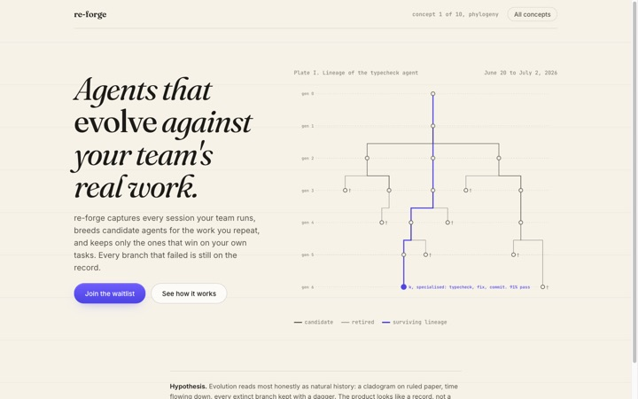
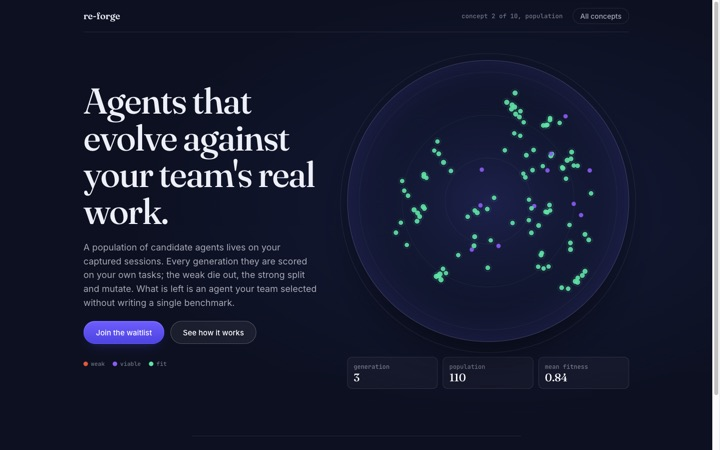
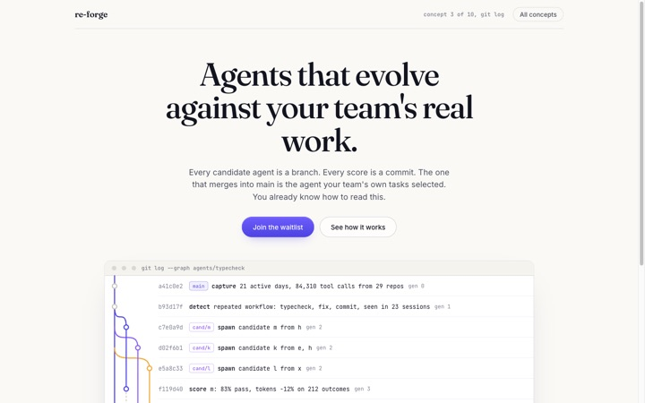
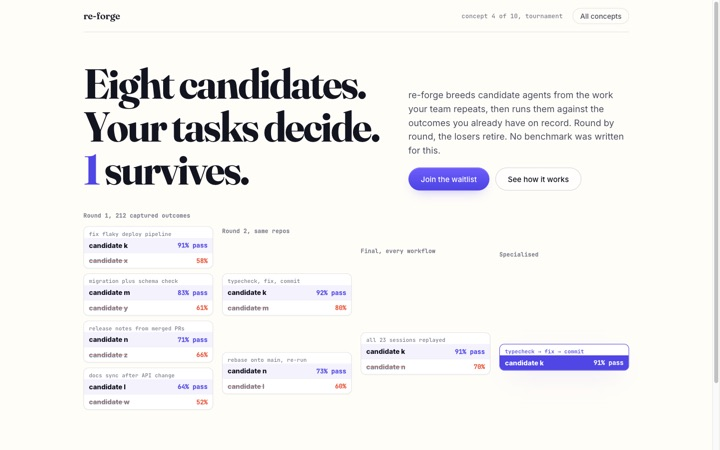
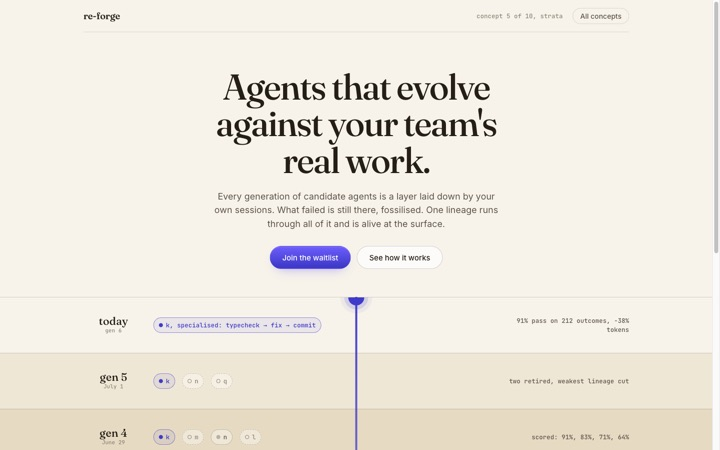
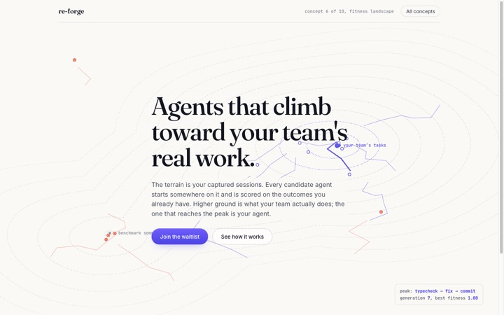
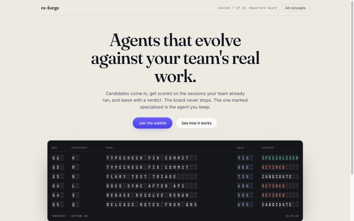
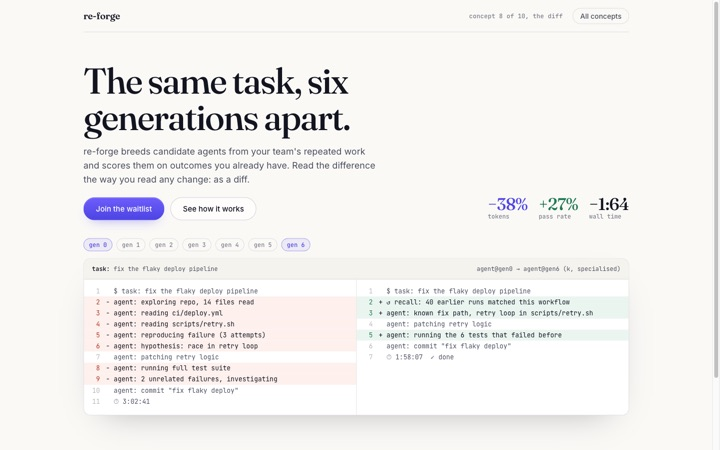
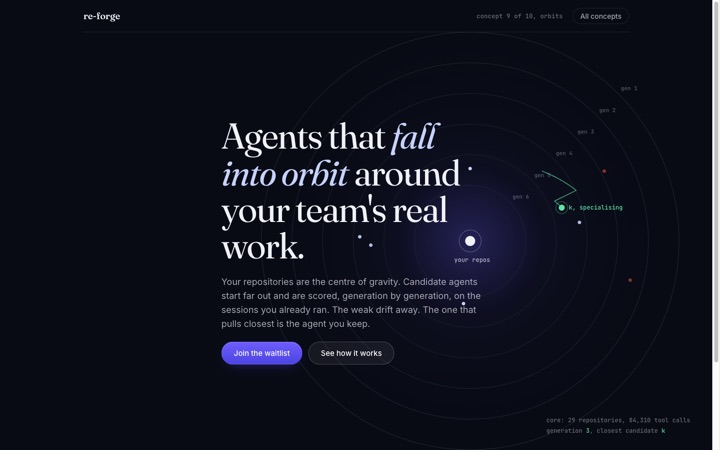
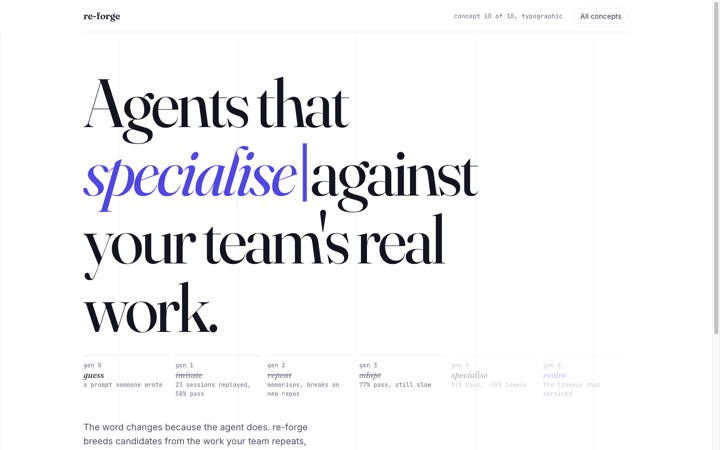

Each page is a different answer to one question: what is the most honest, memorable picture of agents being selected by a team's own work? Same copy, same numbers, ten different pictures. Open any of them full size.

A cladogram on ruled paper, time flowing down, every extinct branch kept with a dagger. Natural history, not a demo.

A live dish of candidates: scored, coloured, pruned and split, generation after generation. The mechanism is the pitch.

Branches are candidates, commits are scores, the specialised agent is the merge into main. A model engineers already have.

Eight candidates, three rounds, every match named after the real task that decided it. Loud and unambiguous.

Generations as sediment: newest on top, retired candidates fossilised below, one vein alive through all of it.

Contour lines make "better on your tasks" spatial. Candidates climb; the peak is a real workflow; one path reaches it.

A split-flap board of candidates, tasks and verdicts, flipping as generations run. Operational and continuous.

Generation zero next to generation six, as a diff. The removed lines make the argument; the diffstat is the proof.

Your repos are the centre of gravity. Candidates orbit, the weak drift out, the fittest spirals in. Calm and cinematic.

No diagram. The verb in the headline mutates generation by generation, failed variants struck through in the margin.